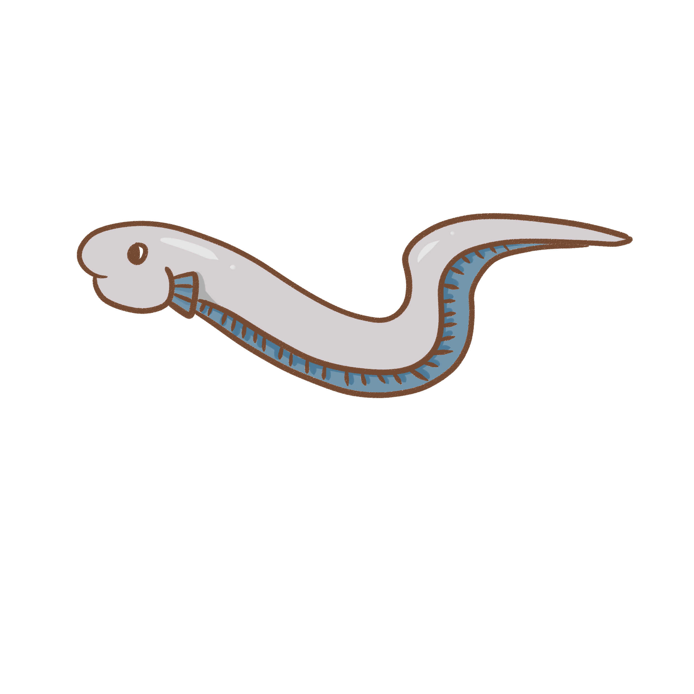

*BLOUP!* Voici Harry l'anguille d'Europe ! Ce type de poisson est capable de respirer l'air que tu respires même s'il vit dans l'eau. L'anguille d'Europe peut donc se déplacer sur terre ! C'est également un poisson migrateur, l'anguille d'Europe vit en eau douce mais elle va dans la mer pour se reproduire. Malheureusement, ce poisson est en risque d'extinction....

Je cherche une partenaire... Fish tu veux bien ;) ?
